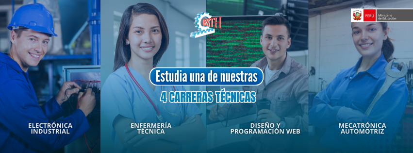
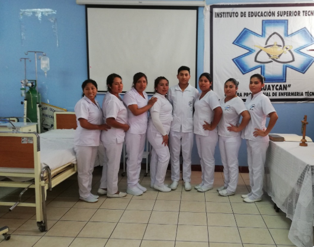
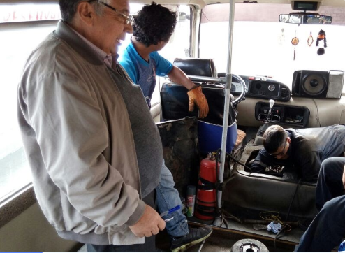
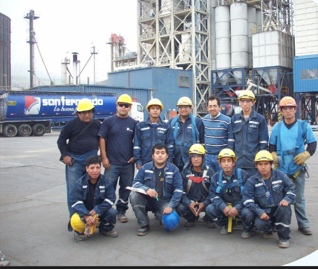

ELECTRÓNICA INDUSTRIAL --- ENFERMERÍA TÉCNICA --- DISEÑO Y PROGRAMACIÓN WEB --- MECATRÓNICA AUTOMOTRIZ

ENFERMERÍA TÉCNICA
La Carrera de Enfermería Técnica del IESTP “HUAYCAN” brinda formación integral del futuro profesional técnico, cuyas actividades van dirigidas a las necesidades que afectan la salud del individuo, familia y comunidad eminentemente humanística, considerando los niveles de prevención y atención en salud, según grado de dependencia y complejidad, con calidad, calidez y actitud ética, cumpliendo las normas de bioseguridad y protocolos establecidos
El área académica de enfermería técnica cuenta con una plana de docentes calificados, la organización y desarrollo del Plan de Estudio está bajo el Diseño del Sistema Modular que proporcione al estudiante conocimiento, destrezas y actitudes que habilitan al futuro egresado a la preparación adecuada para la atención técnico – profesional de Enfermería, que sea eficiente y competitivo en su desempeño personal y profesional y pueda integrarse con facilidad al difícil mundo laboral.

MECÁNICA AUTOMOTRIZ
La Carrera de Mecánica Automotriz en el año 2008 ingresa al sistema modular y en el 2010 al DCB de educación superior, cuenta con los siguientes laboratorios y talleres: automatización y control de proceso, laboratorio diésel, conversión de vehículos a gas, electricidad automotriz, reparación de motores en general, escuela de conductores (choferes), logró adjudicarse mediante el fondo concursable APROLAB dos proyectos durante el año 2010. Uno de ellos para la construcción del circuito de manejo, la instalación de máquinas rectificadoras, proyectos en beneficio de la institución los cuales finalizaron en el 2011, de esta manera la especialidad inició la implementación de los ambientes de enseñanza correspondiente para cada módulo educativo que ofrece la carrera profesional de mecánica automotriz. actualmente cuenta con 1080 m2 entre aulas talleres y laboratorios 3 aulas 2 laboratorios 5 talleres.

ELECTRÓNICA INDUSTRIAL
La Carrera Profesional de Electrónica Industrial formas jóvenes pro activos, capaces de desempeñarse en las áreas de instalaciones eléctricas y electrónicas, automatización industrial y telecomunicaciones. La carrera tiene 03 módulos, cada uno de los módulos son certificados cuando el alumno cumple sus horas de práctica profesionales.
CAMPO LABORAL
El Profesional Técnico en Electrónica Industrial posee conocimientos tecnológicos y de gestión. Podrá desempeñarse en empresas públicas y privadas, especializadas en electricidad, electrónica de potencia y electrónica de control de procesos automatizados industriales y áreas afines. Será capaz de efectuar instalaciones, mantenimiento y reparación de máquinas, equipos y herramientas que incluyen sistemas eléctricos -electrónicos de mando y control en:
El Sector minero, Naval, Manufactura, Petroquímico, Gas, Energía, Agua, Hidrocarburos, Textil, Alimentos y bebidas para poder gestionar, supervisar, dar mantenimiento preventivo y correctivo e Instalación y reparación de equipos electrónicos.
Empresas de servicios de instalación y mantenimiento en Sistemas de Video Vigilancia con Cámaras IP y CCTV, Central de Intrusión, Central Contra Incendios, Control de Acceso y de Telecomunicaciones.

DISEÑO Y PROGRAMACIÓN WEB
La Carrera Profesional de Diseño y Programación Web ha avanzado tanto, que ahora es indispensable en una organización de cualquier tipo: desde el trabajo silencioso de cualquier mesa de ayuda, hasta la extracción y calificación de datos comerciales.
Un técnico en diseño y programación web puede realizar el montaje y desmontaje de equipos informáticos asegurándose del mantenimiento de las partes físicas y lógicas de los componentes. La propuesta de diseño y programación web asegura que sus profesionales en esta carrera podrán ser capaces de instalar, operar, interconectar y dar sostenimiento a equipos de cómputo, asimismo procesar datos y convertirlos en información para una buena toma de decisiones, finalmente en el último el alumno puede diseñar e implementar páginas web, aplicaciones web y aplicaciones móviles.